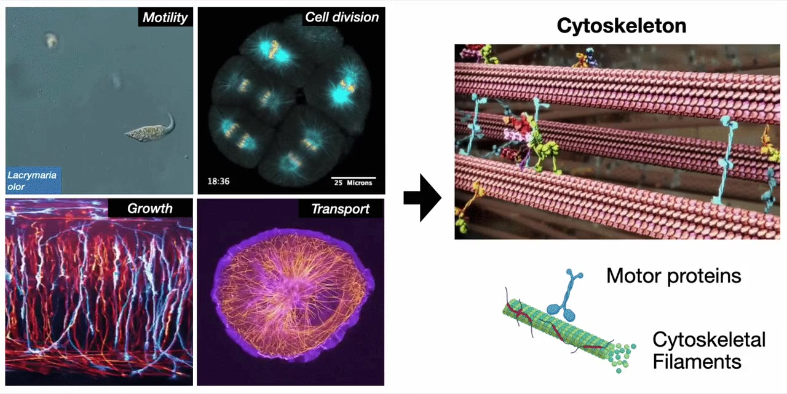
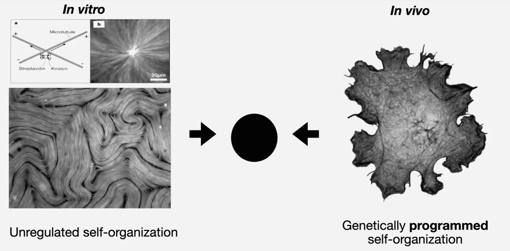

Directional tracks
Microtubules organize movement.
Their two ends are structurally different, giving motors a consistent direction to travel.
A cellular engine across life
Across life, cells crawl, divide, grow, transport material, and reshape themselves by reorganizing the cytoskeleton—an internal network of protein filaments. Molecular motors power these changes. Many organisms encode entire families of motor genes, giving cells a repertoire of ways to reorganize the same underlying machinery.

That universality raises a genetic question:
How does a motor protein’s sequence change the large-scale behavior of the network it drives?
Follow the questionThe shared machinery
Kinesins are nanoscale motors that move along microtubules, one kind of cytoskeletal filament. Each step uses ATP as fuel. When many motors act together, their local forces can align, flow, rotate, bundle, or contract an entire network.
Directional tracks
Their two ends are structurally different, giving motors a consistent direction to travel.
Molecular force
ATP-powered changes in protein shape generate force and movement along the filament.
Collective behavior
Large groups of motors and filaments can create order without a central controller.
The experimental gap

In vitro · purified components
Reconstituted systems make a few components easier to control and measure, but each protein is usually produced and purified before the collective experiment begins.
In vivo · living cells
Thousands of proteins, signals, geometries, and feedback loops act together, obscuring what one motor sequence contributes.
Start with motor-coding DNA, make the motor, and record the self-organizing network it drives—together, under shared conditions.
Figure 1 · The ActiveDROPS experiment
Each experiment runs inside a water-in-oil droplet containing motor-coding DNA, bacterial protein-making machinery, and a preassembled microtubule network. The motor is made inside the same droplet whose motion is recorded.
Choose a natural or engineered motor gene.
Cell-free machinery reads the DNA and builds the tagged motor.
The motor acts on the supplied microtubule network.
Imaging follows motor accumulation and network motion together.
A model maps complete time courses into a common behavior space.

Figure 1 movie
Synchronized views show the microtubules, the fluorescent motor reporter, a composite image, and the measured motion alongside concentration and velocity traces.
Download movieA readable phenotype
Imaging measures when motion begins, how fast it becomes, how long it persists, and how it ends. The paper calls this repeatable, time-resolved network behavior a mechanical phenotype.
A comparable phenotype
A hidden semi-Markov model summarizes which dynamical states appear, in what order, and for how long. It uses the measured mechanics—not the motor name or expression signal—to compare complete time courses.
What ActiveDROPS adds
Motor–microtubule self-organization, cell-free cytoskeletal construction, and kinesin chimeras each had a scientific history. ActiveDROPS connects those levels in one sequence-to-behavior framework—and then asks whether behavior can be rewritten by engineering the motor itself.
Purified components can form asters, vortices, flows, and contractile structures.
Cell-free expression can execute cytoskeletal assembly in reconstructed compartments.
Head, neck, and force-transmitting elements influence one another’s function.
Motor–microtubule self-organization: Nédélec et al., 1997, Surrey et al., 2001, Sanchez et al., 2012, Henkin et al., 2014, and Najma et al., 2024.
Cell-free cytoskeletal expression: Garenne et al., 2020 and Godino et al., 2020.
Kinesin chimeras and coupled architecture: Adio et al., 2009 and Scarborough et al., 2019.
The experimental arc
Each result creates the question answered by the next. Natural motors reveal distinct network behaviors; motor-scale assays connect them to biochemistry; and Figure 4 changes the coupled protein architecture itself.
Figure 2
Natural motor diversity
Twelve kinesin-related motors from animals, amoebae, and other single-celled eukaryotes were expressed under the same conditions. Some activate slowly and keep the network moving for hours. Others activate quickly, move faster, and fade early. We call these shared patterns Slow-Sustained and Fast-Burst.
ThTr follows a different path: filaments first align, then the entire droplet rotates, and finally the network contracts.

Fast-Burst
Several motors rapidly reorganize their microtubule networks, reach high speeds, and then lose activity early.
Multiple droplets are shown side by side as bright microtubule networks reorganize during the first hours of the experiment.
Slow-Sustained
Kif5a, K401, and Unc activate later and maintain organized network motion for many hours.
Three droplets are shown side by side as their networks gradually organize and remain active at late time points.
Complete library
The full panel places the two shared timing patterns beside the distinct ThTr progression.
Twelve droplets are shown simultaneously, making differences in activation time, persistence, rotation, and contraction visible.
Figure 3
Biochemical basis
Because the motors accumulate at different rates, expression alone could have explained their collective behavior. Two measurements outside the expression experiment address that alternative.
Gliding assays measure how surface-bound motors propel microtubules across ATP concentrations. Molecular simulations describe modeled motor–tubulin interactions across nucleotide states. The motors largely separate along the same Slow-Sustained and Fast-Burst lines in both kinds of measurement, showing that their sequences also encode biochemical differences.

Microtubule gliding assay
Motors fixed to a surface propel fluorescent microtubules, revealing how movement changes with ATP concentration.
Fluorescent microtubules move across motor-coated surfaces in a matrix arranged by motor group and ATP concentration.
Figure 4 · Main discovery
Rewriting motor architecture
Natural motors show that sequences differ, but not where the information sits inside the protein. K401 and Kif3 were rebuilt across three interacting regions involved in ATP processing, microtubule binding, and force transmission.
One chimera, SFS, activates rapidly like Kif3 and remains active for hours like K401. This Fast-Sustained behavior is a combination that neither parent produces.

Architecture rewrite
K401, Kif3, and their recombined motors generate distinct time courses of microtubule-network motion.
Droplets containing the two parental motors and three chimeras are compared at matched times, revealing distinct patterns of network organization.
Figure 5 · Secondary extension
Expression control
As ThTr accumulates, filaments first line up in parallel, then the whole droplet rotates, and finally the network pulls inward. Changing the supplied DNA dose changes the motor’s expression dynamics and selects where that existing progression stops.
At 1 nM the network stays aligned. At 10 nM it reaches rotation. At 100 nM it continues to contraction.

ThTr expression control
Three DNA doses show the network stopping after alignment, after rotation, or after contraction.
Three droplets are shown side by side as they move to different endpoints along the same ordered sequence of network states.
From discovery to design
Natural sequences reveal functional diversity. Independent measurements establish a biochemical basis for the shared patterns. Chimeras show that a new temporal program can be built by reconfiguring coupled protein architecture.
Read the study
Division of Biology and Biological Engineering · Caltech